Minimum Spanning Tree, Graph Coloring & FSA
Sesi terakhir ini membahas empat topik penting dalam Teori Graf dan Teori Automata: pencarian Pohon Rentang Minimum (Minimum Spanning Tree) dengan Algoritma Prim dan Kruskal, konsep Pewarnaan Graf (Graph Coloring) termasuk bilangan kromatik dan polinomial kromatik, perancangan Finite State Automata (DFA), serta konsep Isomorfisma Graf.
1. Minimum Spanning Tree (MST)
Sebelum masuk ke algoritmanya, mari kita pahami definisinya terlebih dahulu. Sebuah Spanning Tree (Pohon Rentang) adalah subgraf dari graf terhubung $G$ yang berupa pohon (tidak memiliki sirkuit/loop) dan menghubungkan seluruh vertex (titik) di graf tersebut. Jika graf tersebut memiliki bobot pada setiap sisinya (weighted graph), maka Minimum Spanning Tree (MST) adalah spanning tree yang memiliki total bobot sisi paling minimal.
Terdapat dua algoritma terkenal untuk mencari MST, yaitu Algoritma Prim dan Algoritma Kruskal.
- Algoritma Prim (Vertex-centric): Kita memilih vertex sebagai pijakan dasar. Pohon tumbuh secara bertahap dari satu titik awal, selalu memilih sisi incident dengan bobot terkecil yang menghubungkan pohon ke vertex yang belum dikunjungi.
- Algoritma Kruskal (Edge-centric): Kita mengabaikan letak vertex di awal. Kita langsung mengurutkan seluruh sisi berdasarkan bobotnya, lalu memilih sisi satu per satu dari yang terkecil, dengan syarat sisi yang dipilih tidak membentuk sirkuit (loop) dengan sisi-sisi yang sudah terpilih sebelumnya.
Algoritma Prim
Langkah-langkah pengerjaan dengan Algoritma Prim:
- Pilih satu vertex awal secara acak (atau sesuai ketentuan soal).
- Tandai atau cari sisi-sisi (edges) yang terhubung (incident) dengan vertex yang sudah dikunjungi.
- Dari sisi-sisi tersebut, pilih sisi yang memiliki bobot terkecil dan hubungkan ke vertex baru (pastikan tidak membentuk loop/sirkuit).
- Ulangi langkah 2 dan 3 hingga seluruh vertex berhasil dikunjungi. Jika graf memiliki $n$ vertex, maka akan terpilih tepat $n-1$ sisi.
Tentukan Minimum Spanning Tree (MST) dari graf berikut dengan menggunakan Algoritma Prim:
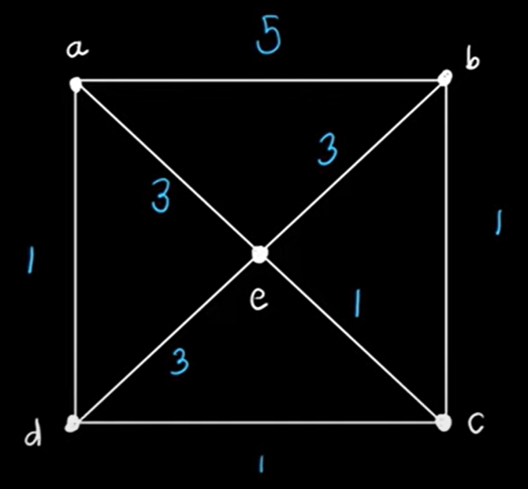
Mari kita selesaikan langkah demi langkah dimulai dari vertex $a$:
| Pilihan Ke- | Sisi (Edge) Terpilih | Bobot (Cost) | Vertex Terkunjungi |
|---|---|---|---|
| 1 | \(ad\) | 1 | \(\{a, d\}\) |
| 2 | \(dc\) | 1 | \(\{a, d, c\}\) |
| 3 | \(ce\) | 1 | \(\{a, d, c, e\}\) |
| 4 | \(cb\) | 1 | \(\{a, d, c, e, b\}\) |
Catatan:
- Pada langkah 3, sisi yang incident dengan vertex terpilh adalah \(ae(3)\), \(de(3)\), \(ce(1)\), \(cb(1)\). Kita memilih \(ce(1)\) (atau \(cb(1)\), keduanya bernilai minimal).
- Seluruh 5 vertex sudah terhubung oleh 4 sisi tanpa membentuk loop.
Total bobot minimum pipa/kabel yang dibutuhkan adalah \(1 + 1 + 1 + 1 = 4\).
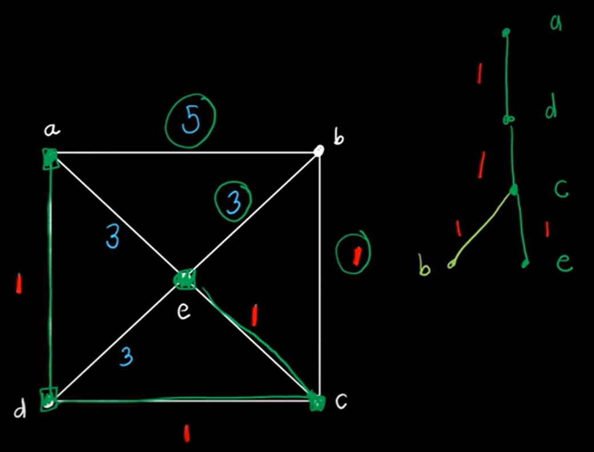
Carilah MST menggunakan Algoritma Prim untuk graf berbobot di bawah ini:
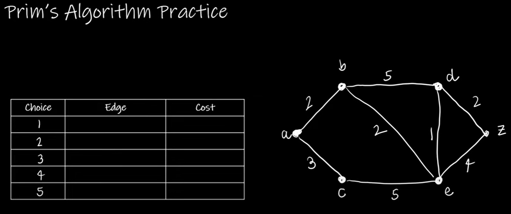
Berikut adalah tabel langkah pemilihan sisi dengan Algoritma Prim dimulai dari vertex $a$:
| Pilihan Ke- | Sisi (Edge) Terpilih | Bobot (Cost) | Vertex Terkunjungi |
|---|---|---|---|
| 1 | \(ab\) | 2 | \(\{a, b\}\) |
| 2 | \(be\) | 2 | \(\{a, b, e\}\) |
| 3 | \(ed\) | 1 | \(\{a, b, e, d\}\) |
| 4 | \(dz\) | 2 | \(\{a, b, e, d, z\}\) |
| 5 | \(ac\) | 3 | \(\{a, b, e, d, z, c\}\) |
Penjelasan Detail:
- Setelah langkah 4, vertex terhubung adalah \(\{a, b, e, d, z\}\). Sisi yang incident adalah \(ac(3)\) dan \(ce(5)\). Kita pilih \(ac\) yang berbobot 3 karena lebih kecil. Sisi \(ce\) tidak boleh dipilih di langkah berikutnya karena akan membentuk loop/sirkuit \(a-b-e-c-a\).
Total bobot MST = \(2 + 2 + 1 + 2 + 3 = 10\).
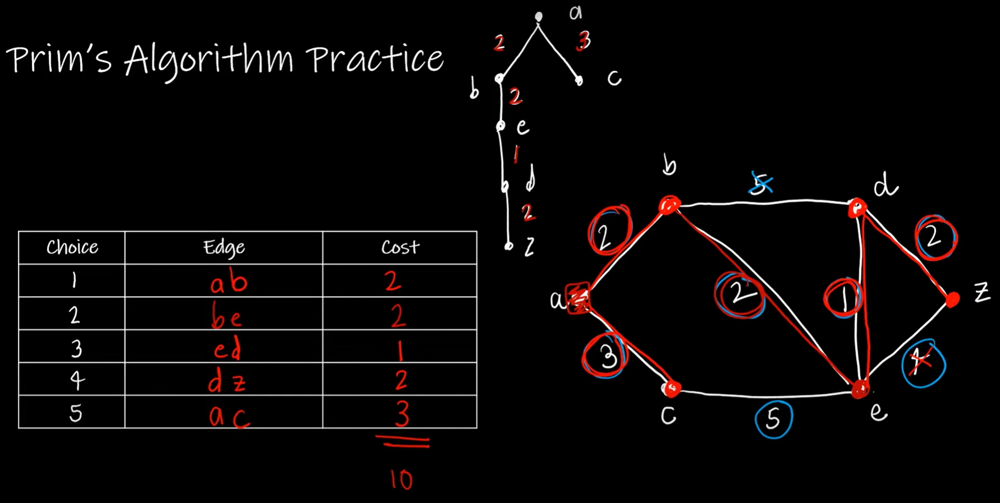
Tentukan MST dari graf berikut dengan menggunakan Algoritma Prim:
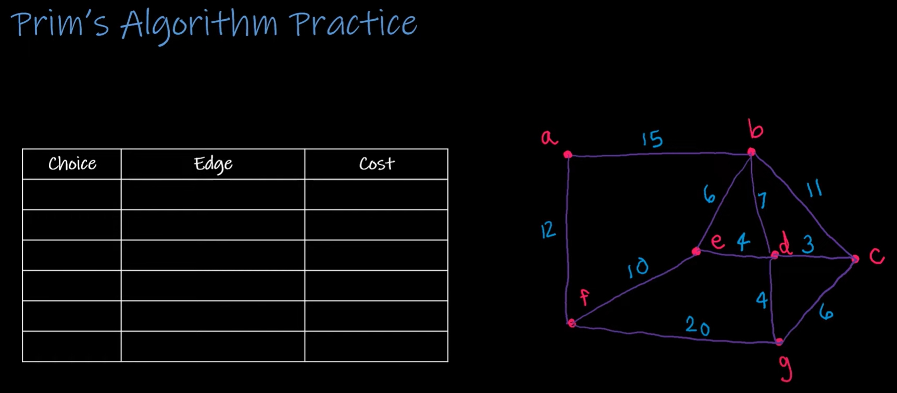
Mari lakukan pencarian MST menggunakan Algoritma Prim dimulai dari vertex $d$:
| Pilihan Ke- | Sisi (Edge) Terpilih | Bobot (Cost) | Vertex Terkunjungi |
|---|---|---|---|
| 1 | \(dc\) | 3 | \(\{d, c\}\) |
| 2 | \(dg\) | 4 | \(\{d, c, g\}\) |
| 3 | \(ed\) | 4 | \(\{d, c, g, e\}\) |
| 4 | \(eb\) | 6 | \(\{d, c, g, e, b\}\) |
| 5 | \(ef\) | 10 | \(\{d, c, g, e, b, f\}\) |
| 6 | \(af\) | 12 | \(\{d, c, g, e, b, f, a\}\) |
Catatan:
- Sisi \(bd(7)\) diabaikan karena jika dipilih akan membentuk sirkuit tertutup \(d-e-b-d\).
- Sisi \(cg(6)\) diabaikan karena menghubungkan vertex yang keduanya sudah dikunjungi, yang akan membentuk sirkuit \(d-c-g-d\).
Total bobot MST = \(3 + 4 + 4 + 6 + 10 + 12 = 39\).
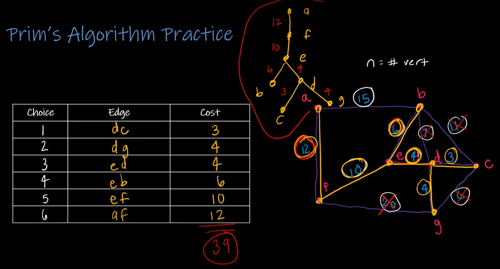
Algoritma Kruskal
Langkah-langkah pengerjaan dengan Algoritma Kruskal:
- Urutkan (sort) seluruh sisi graf dari bobot terkecil hingga terbesar.
- Pilih sisi dengan bobot terkecil pertama.
- Pilih sisi berikutnya dari daftar urutan. Periksa apakah sisi tersebut membentuk sirkuit (loop) jika digabungkan dengan sisi yang sudah dipilih sebelumnya. Jika YA, abaikan sisi tersebut. Jika TIDAK, pilih sisi tersebut.
- Ulangi langkah 3 hingga terpilih sebanyak $n-1$ sisi.
Carilah MST dari graf berikut dengan menggunakan Algoritma Kruskal:
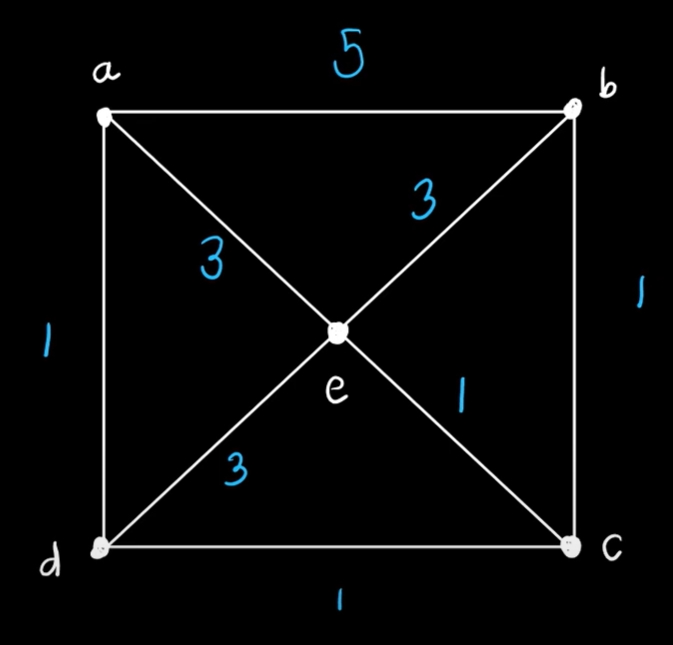
Urutkan semua sisi berdasarkan bobotnya:
- \(ad (1)\), \(cb (1)\), \(ce (1)\), \(dc (1)\), \(ae (3)\), \(be (3)\), \(de (3)\), \(ab (5)\)
Mari kita pilih sisi-sisi tersebut secara berurutan:
| Pilihan Ke- | Sisi (Edge) | Bobot | Status | Alasan |
|---|---|---|---|---|
| 1 | \(ad\) | 1 | Terpilih | Bobot terkecil pertama |
| 2 | \(cb\) | 1 | Terpilih | Bobot terkecil kedua, tidak membentuk loop |
| 3 | \(ce\) | 1 | Terpilih | Bobot terkecil ketiga, tidak membentuk loop |
| 4 | \(dc\) | 1 | Terpilih | Bobot terkecil keempat, tidak membentuk loop |
Karena kita sudah mendapatkan 4 sisi (\(n-1\)) untuk graf dengan 5 vertex, pencarian dihentikan.
Total bobot MST = \(1 + 1 + 1 + 1 = 4\).
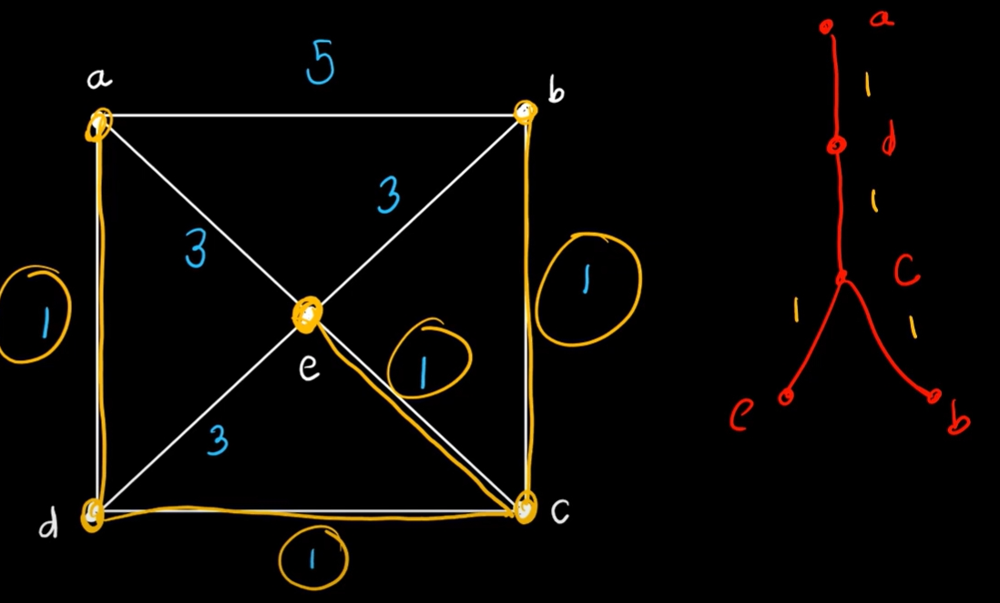
Carilah MST dari graf berikut dengan menggunakan Algoritma Kruskal:
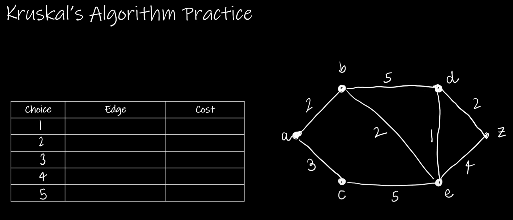
Daftar sisi yang diurutkan berdasarkan bobotnya:
- \(de(1)\), \(ab(2)\), \(be(2)\), \(dz(2)\), \(ac(3)\), \(ez(4)\), \(bd(5)\), \(ce(5)\)
Mari kita pilih secara berurutan:
| Langkah | Sisi | Bobot | Status | Keterangan |
|---|---|---|---|---|
| 1 | \(de\) | 1 | Terpilih | Bobot 1 |
| 2 | \(dz\) | 2 | Terpilih | Bobot 2 |
| 3 | \(ab\) | 2 | Terpilih | Bobot 2 |
| 4 | \(be\) | 2 | Terpilih | Bobot 2 |
| 5 | \(ac\) | 3 | Terpilih | Bobot 3 |
Jumlah sisi terpilih = 5 (untuk 6 vertex), maka proses selesai. Sisi lainnya seperti \(ez(4)\) diabaikan karena akan membentuk loop \(d-e-z-d\).
Total bobot MST = \(1 + 2 + 2 + 2 + 3 = 10\).
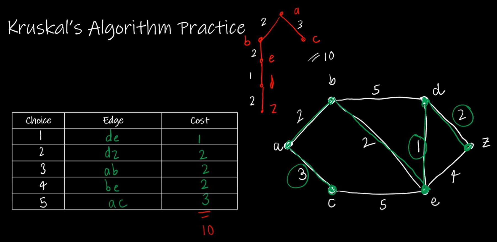
Carilah MST dari graf berikut dengan menggunakan Algoritma Kruskal:
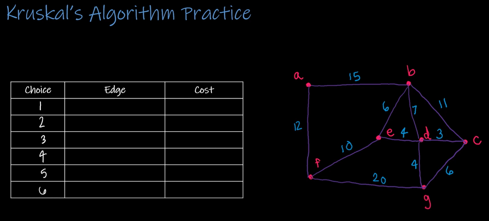
Urutan sisi berdasarkan bobot:
- \(dc(3)\), \(dg(4)\), \(ed(4)\), \(eb(6)\), \(bd(7)\), \(ef(10)\), \(bc(11)\), \(af(12)\), \(ab(15)\), \(fg(20)\)
Mari kita pilih sisi-sisi tersebut:
| Pilihan Ke- | Sisi | Bobot | Status | Keterangan |
|---|---|---|---|---|
| 1 | \(dc\) | 3 | Terpilih | Sisi berbobot terkecil |
| 2 | \(dg\) | 4 | Terpilih | Tidak membentuk loop |
| 3 | \(de\) | 4 | Terpilih | Tidak membentuk loop |
| 4 | \(eb\) | 6 | Terpilih | Tidak membentuk loop |
| - | \(bd\) | 7 | Diabaikan | Membentuk loop \(b-e-d-b\) |
| 5 | \(ef\) | 10 | Terpilih | Tidak membentuk loop |
| - | \(bc\) | 11 | Diabaikan | Membentuk loop |
| 6 | \(af\) | 12 | Terpilih | Tidak membentuk loop |
Total bobot MST = \(3 + 4 + 4 + 6 + 10 + 12 = 39\).
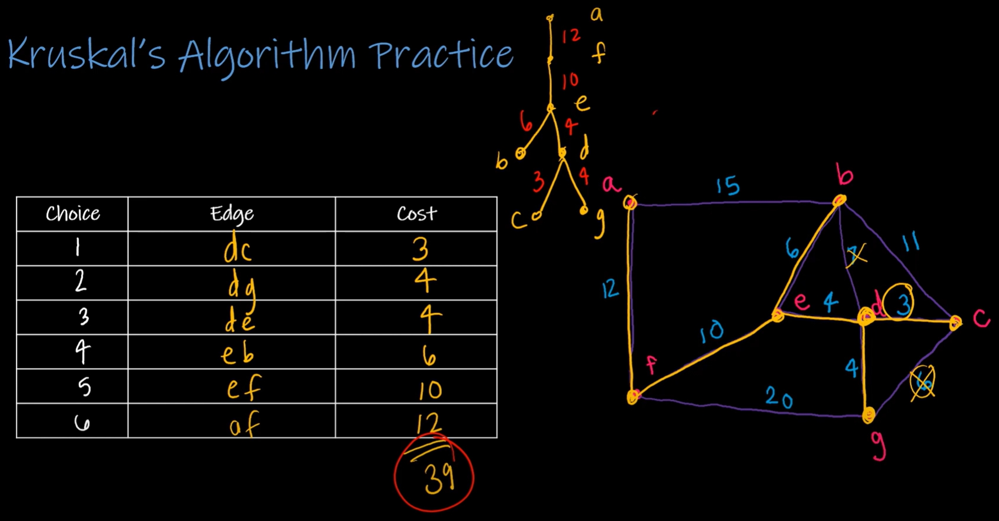
Studi Kasus: Jaringan Pipa Air PDAM
Sebuah perusahaan penyedia air (PDAM) ingin membuat jalur pipa yang menghubungkan antar kota di bawah ini. Sumber mata air berasal dari Waduk Jatiluhur Purwakarta. Perusahaan ingin mencari total jalur pipa terpendek agar meminimalisir biaya pembuatan pipa.
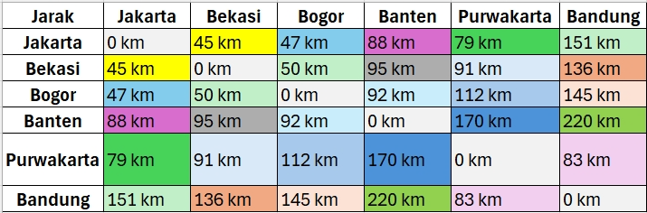
Berikut adalah tabel jarak antar kota dalam bentuk data numerik:
| Jarak (km) | Jakarta | Bekasi | Bogor | Banten | Purwakarta | Bandung |
|---|---|---|---|---|---|---|
| Jakarta | 0 | 45 | 47 | 88 | 79 | 151 |
| Bekasi | 45 | 0 | 50 | 95 | 91 | 136 |
| Bogor | 47 | 50 | 0 | 92 | 112 | 145 |
| Banten | 88 | 95 | 92 | 0 | 170 | 220 |
| Purwakarta | 79 | 91 | 112 | 170 | 0 | 83 |
| Bandung | 151 | 136 | 145 | 220 | 83 | 0 |
Soal:
a. Gambarkan graf yang merepresentasikan jarak antar kota pada tabel di atas.
b. Hitunglah jarak terpendek pipa yang bisa dibuat untuk menghubungkan semua kota dengan Waduk Jatiluhur Purwakarta sebagai pusat air. Berapa panjang pipa minimum yang dibutuhkan? (Gunakan Algoritma Prim).
a. Representasi Graf Jaringan:
Graf digambarkan dengan 6 titik kota dan sisi berbobot jarak antar kota seperti pada lembar penyelesaian di bawah.
b. Langkah Algoritma Prim dimulai dari Purwakarta (Pur):
| Pilihan | Kota Terhubung | Pipa Ditunjuk | Jarak (km) |
|---|---|---|---|
| 1 | Purwakarta (Pur) | Purwakarta - Jakarta | 79 |
| 2 | Pur, Jakarta (Jak) | Jakarta - Bekasi | 45 |
| 3 | Pur, Jak, Bekasi (Bek) | Jakarta - Bogor | 47 |
| 4 | Pur, Jak, Bek, Bogor (Bog) | Purwakarta - Bandung | 83 |
| 5 | Pur, Jak, Bek, Bog, Bandung (Bdg) | Jakarta - Banten | 88 |
Total Panjang Pipa Minimum:
\[\text{Total Jarak} = 79 + 45 + 47 + 83 + 88 = 342 \text{ km}\]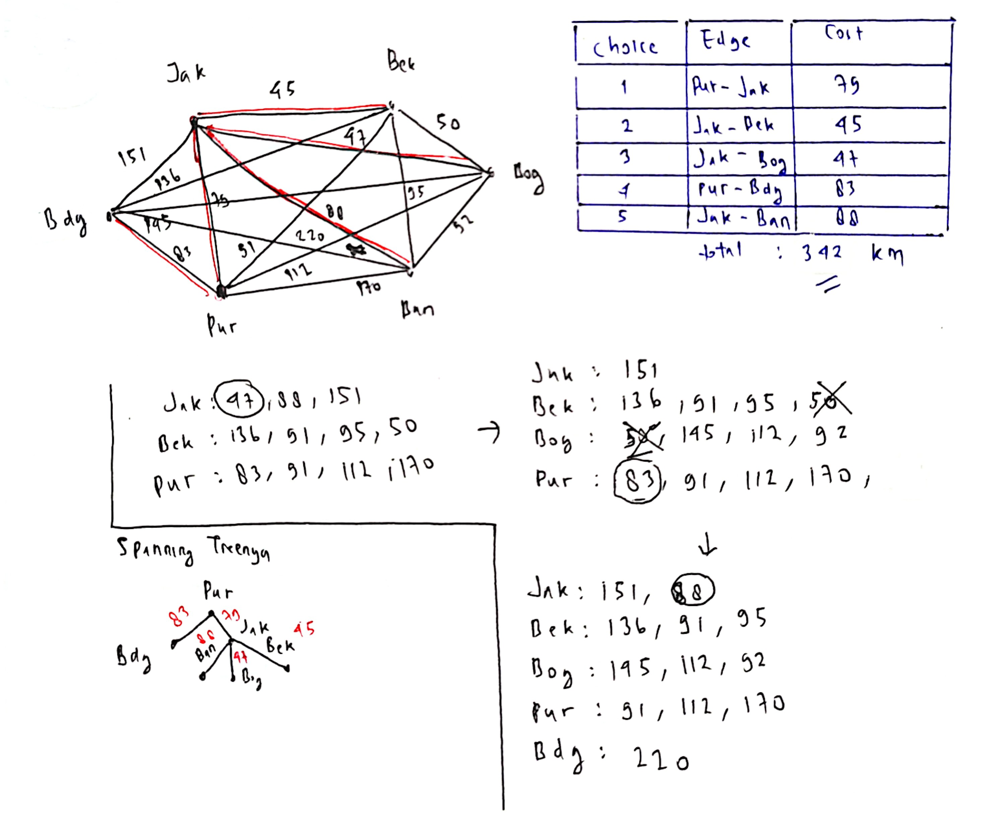
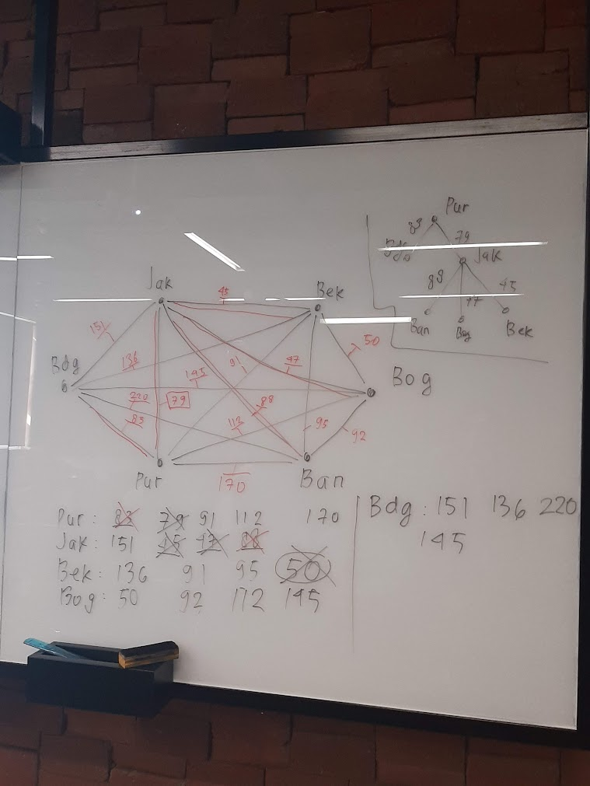
2. Graph Coloring (Pewarnaan Graf)
Pewarnaan Graf (Graph Coloring) adalah proses pemberian warna pada elemen-elemen graf (dalam hal ini vertex) sedemikian rupa sehingga tidak ada dua vertex yang bertetangga (bersebelahan langsung) memiliki warna yang sama. Tujuan utamanya biasanya adalah meminimalkan jumlah warna yang digunakan.
Masalah ini berawal dari pewarnaan peta negara/benua. Negara-negara yang bertetangga tidak boleh menggunakan warna bendera/peta yang sama agar batas wilayahnya terlihat jelas. Peta ini dapat ditransformasikan menjadi graf dengan cara: setiap wilayah menjadi vertex, dan batas wilayah yang bersebelahan menjadi edge.
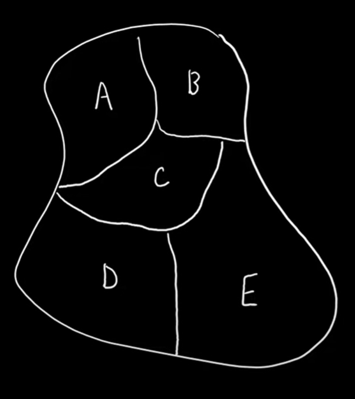
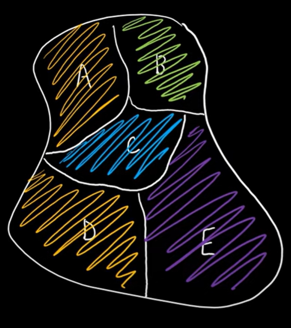
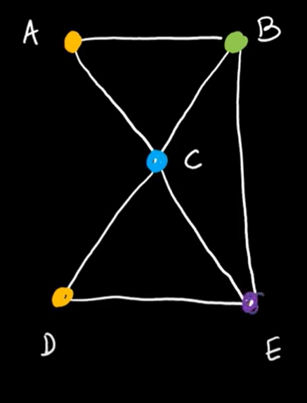
Graf Bipartite (Bipartite Graph)
Sebuah graf disebut Bipartite jika himpunan vertex-nya dapat dibagi menjadi dua himpunan independen $V_1$ and $V_2$ sehingga setiap edge menghubungkan titik di $V_1$ dengan titik di $V_2$. Cara termudah menguji apakah sebuah graf bipartite adalah dengan mewarnainya. Jika graf tersebut cukup diwarnai dengan 2 warna saja, maka graf tersebut adalah bipartite.
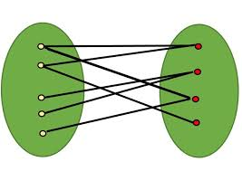
Periksalah apakah kedua graf di bawah ini merupakan graf bipartite:
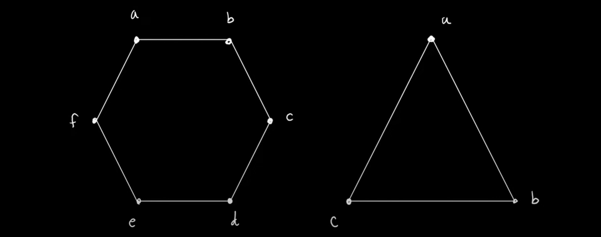
1. Graf Hexagon ($C_6$):
Dapat diwarnai dengan cukup 2 warna (Kuning dan Hijau) secara selang-seling:
\(a(\text{Kuning}) \rightarrow b(\text{Hijau}) \rightarrow c(\text{Kuning}) \rightarrow d(\text{Hijau}) \rightarrow e(\text{Kuning}) \rightarrow f(\text{Hijau})\).
Karena cukup dengan 2 warna, graf ini Bipartite. Kita bisa mengelompokkan vertex menjadi:
\(V_1 = \{a, c, e\}\) dan \(V_2 = \{b, d, f\}\).
2. Graf Segitiga ($C_3$):
Setiap vertex terhubung satu sama lain. Jika \(a\) diberi warna Kuning dan \(b\) diberi warna Biru, maka \(c\) yang bertetangga dengan keduanya harus diberi warna ketiga (Hijau). Karena butuh 3 warna, graf ini Bukan Bipartite.
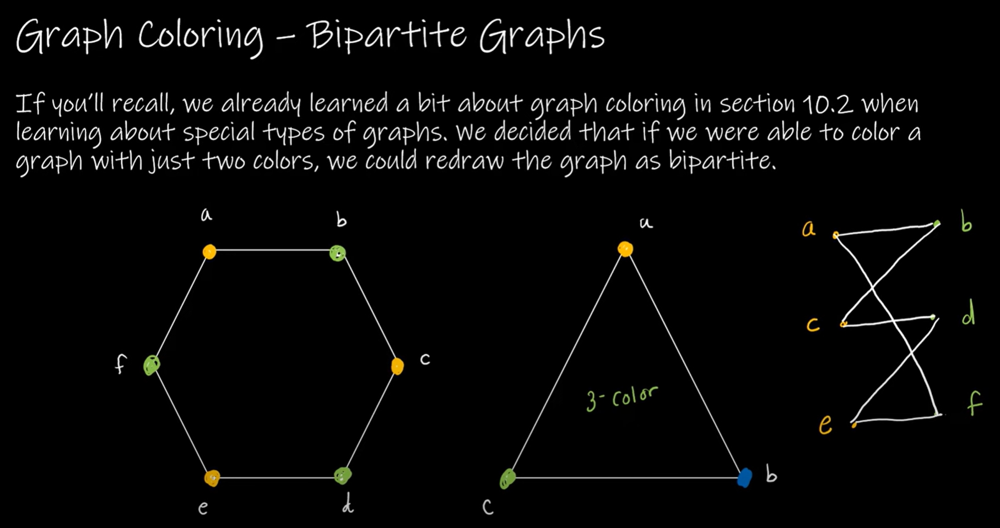
Chromatic Number $\chi(G)$
Chromatic Number (Bilangan Kromatik), dinotasikan dengan $\chi(G)$ (dibaca kai), adalah jumlah warna minimum yang diperlukan untuk mewarnai graf $G$ sedemikian rupa sehingga tidak ada dua vertex bersebelahan yang sewarna.
- Complete Graph ($K_n$): Karena setiap vertex terhubung dengan seluruh vertex lainnya, maka kita membutuhkan warna yang berbeda untuk setiap vertex. \[\chi(K_n) = n\]
- Cycle Graph ($C_n$): \[\chi(C_n) = \begin{cases} 2 & \text{jika } n \text{ genap} \\ 3 & \text{jika } n \text{ ganjil} \end{cases}\]
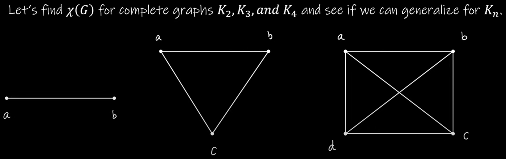
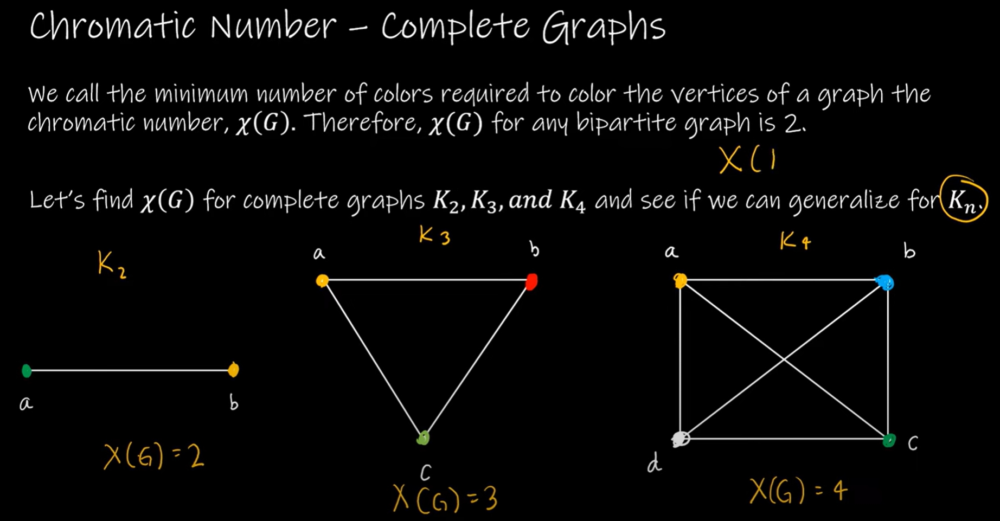
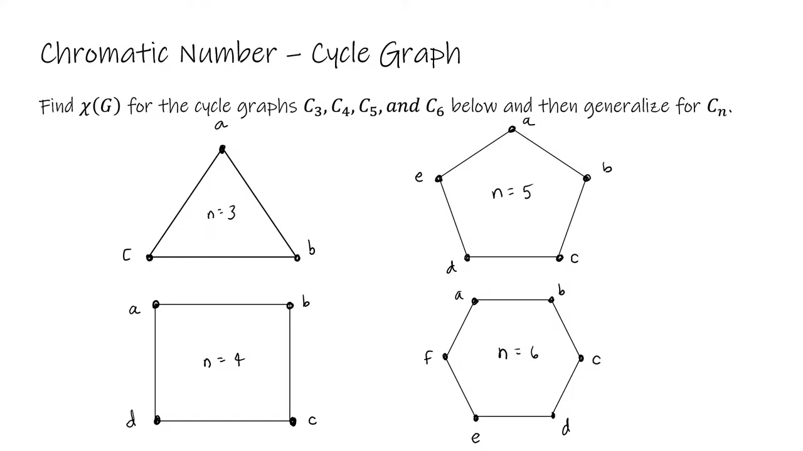
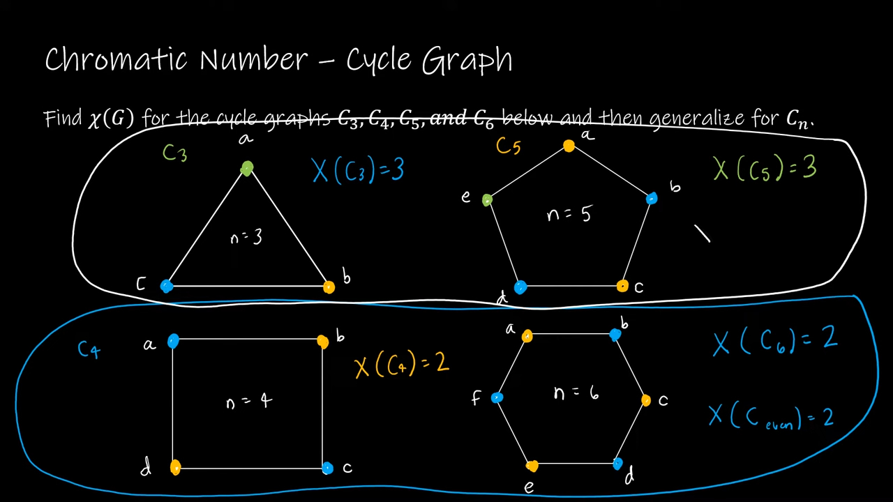
Chromatic Polynomial $P(G, k)$
Chromatic Polynomial (Polinomial Kromatik), dinotasikan dengan $P(G, k)$ atau $P(G, \lambda)$, adalah fungsi polinomial yang menghitung banyaknya cara mewarnai graf $G$ dengan menggunakan maksimal $k$ warna yang tersedia.
Sebagai contoh, pada graf peta wilayah dual sebelumnya (yang terdiri dari 5 titik $A, B, C, D, E$):
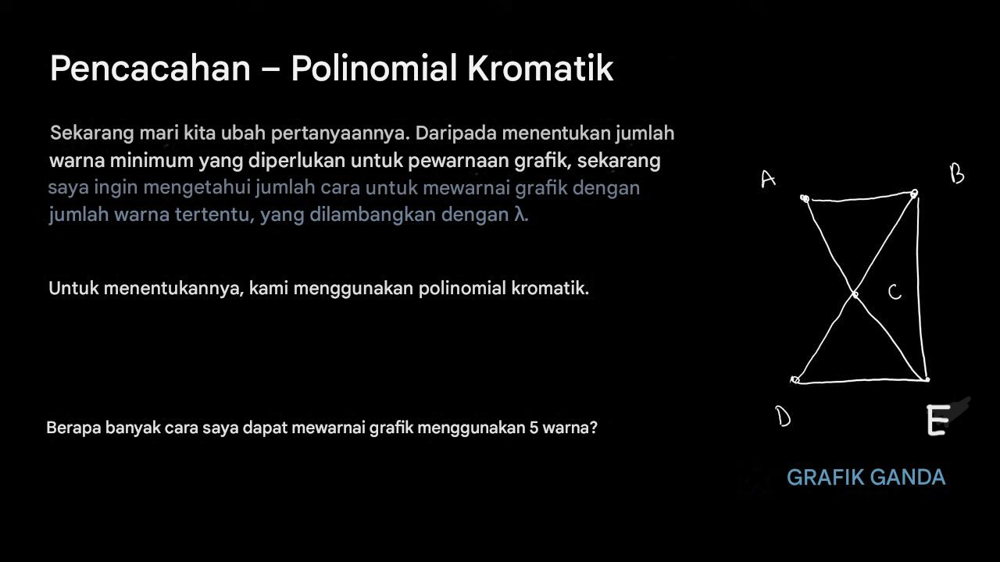
Jika kita mewarnai secara berurutan:
- Titik \(A\) dapat menggunakan \(\lambda\) warna.
- Titik \(B\) bertetangga dengan \(A\), maka dapat menggunakan \(\lambda - 1\) warna.
- Titik \(C\) bertetangga dengan \(A\) dan \(B\), maka dapat menggunakan \(\lambda - 2\) warna.
- Titik \(D\) bertetangga dengan \(C\) saja, maka dapat menggunakan \(\lambda - 1\) warna.
- Titik \(E\) bertetangga dengan \(B, C, D\). Dengan asumsi warna ketiganya berbeda, \(E\) dapat menggunakan \(\lambda - 3\) warna.
Maka rumus polinomial kromatiknya adalah: \[P(G, \lambda) = \lambda(\lambda-1)(\lambda-2)(\lambda-1)(\lambda-3)\] Jika kita menggunakan 5 warna (\(\lambda = 5\)), jumlah caranya adalah: \[P(G, 5) = 5 \times 4 \times 3 \times 4 \times 2 = 480 \text{ cara}\]
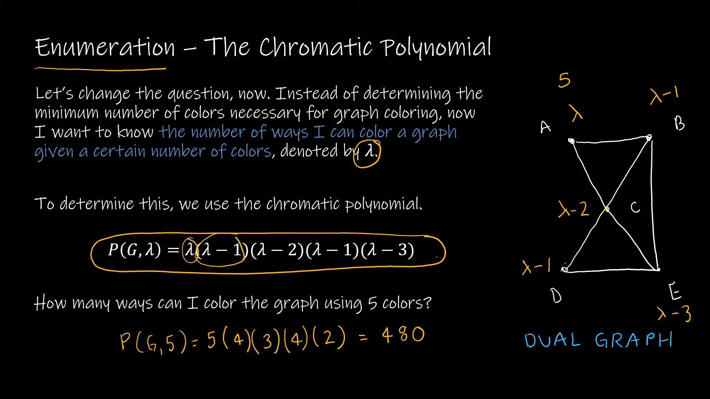
Carilah Chromatic Polynomial $P(G, \lambda)$ untuk graf di bawah ini, lalu hitunglah berapa banyak cara mewarnai graf tersebut dengan menggunakan 6 warna:
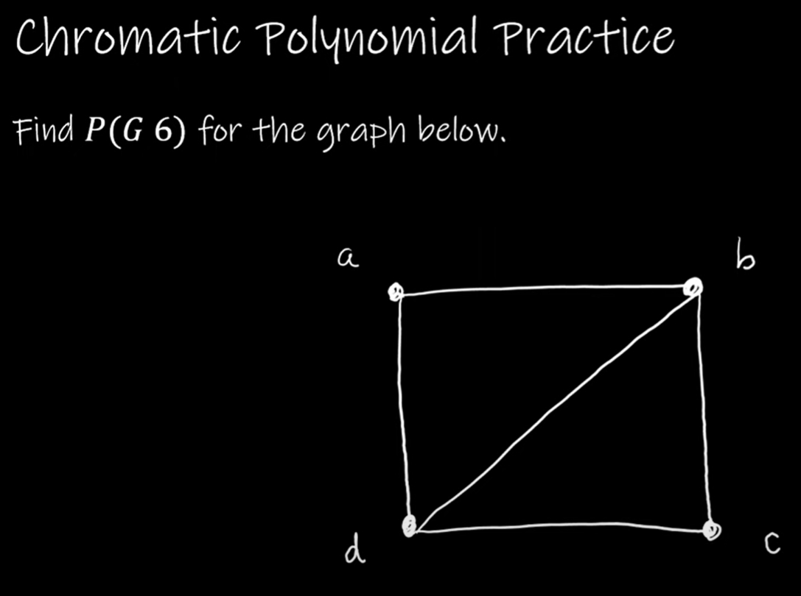
Mari kita tentukan pilihan warna untuk setiap vertex secara bertahap:
- Vertex \(a\) diberi warna pertama: memiliki \(\lambda\) pilihan warna.
- Vertex \(b\) terhubung ke \(a\): memiliki \(\lambda - 1\) pilihan warna.
- Vertex \(c\) terhubung ke \(b\): memiliki \(\lambda - 2\) pilihan warna (karena warnanya tidak boleh sama dengan \(b\) dan diasumsikan berbeda dari \(a\)).
- Vertex \(d\) terhubung ke \(a\), \(b\), dan \(c\): karena harus berbeda dari ketiga warna titik tetangganya tersebut, maka memiliki \(\lambda - 3\) pilihan warna.
Sehingga rumus polinomialnya adalah:
\[P(G, \lambda) = \lambda(\lambda - 1)(\lambda - 2)(\lambda - 3)\]Jika kita menggunakan 6 warna (\(\lambda = 6\)):
\[P(G, 6) = 6 \times 5 \times 4 \times 3 = 360 \text{ cara}\]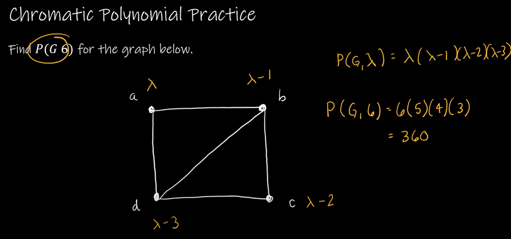
Studi Kasus 1: Penjadwalan Ujian Kuliah
North Central University menawarkan 8 mata kuliah selama musim panas. Tabel di bawah ini menandakan (dengan tanda X) bahwa sepasang mata kuliah memiliki mahasiswa yang sama, sehingga jadwal ujiannya tidak boleh bentrok. Universitas hanya memiliki 2 kelas ber-AC yang dapat digunakan selama musim panas.
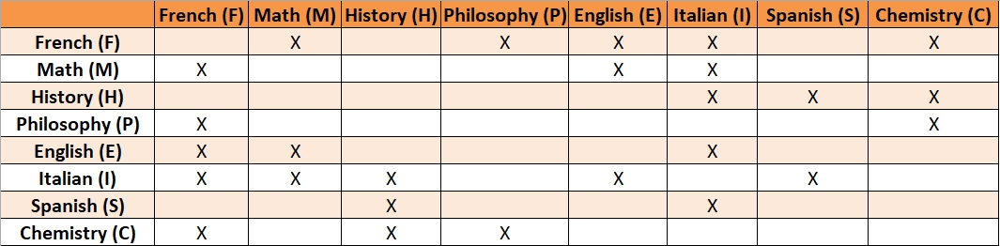
Soal:
Jadwalkan waktu ujian yang efisien untuk setiap mata kuliah. Gunakan hari/slot waktu sesedikit mungkin dan pastikan tidak ada jadwal mahasiswa yang bentrok.
Masalah ini dimodelkan ke dalam Pewarnaan Graf. Setiap mata kuliah menjadi vertex dan setiap bentrok (X) menjadi edge. Kita mencari bilangan kromatik \(\chi(G)\) untuk mengetahui jumlah hari minimum.
Berdasarkan graf bentrok yang terbentuk, didapatkan \(\chi(G) = 4\). Artinya, kita membutuhkan minimal 4 slot waktu (hari) agar ujian tidak bentrok.
Pembagian Slot Waktu Ujian:
- Slot Waktu 1 (Biru): French (F), History (H)
- Slot Waktu 2 (Hijau): Philosophy (P), Italian (I)
- Slot Waktu 3 (Oranye): Chemistry (C), Math (M)
- Slot Waktu 4 (Ungu): English (E), Spanish (S)
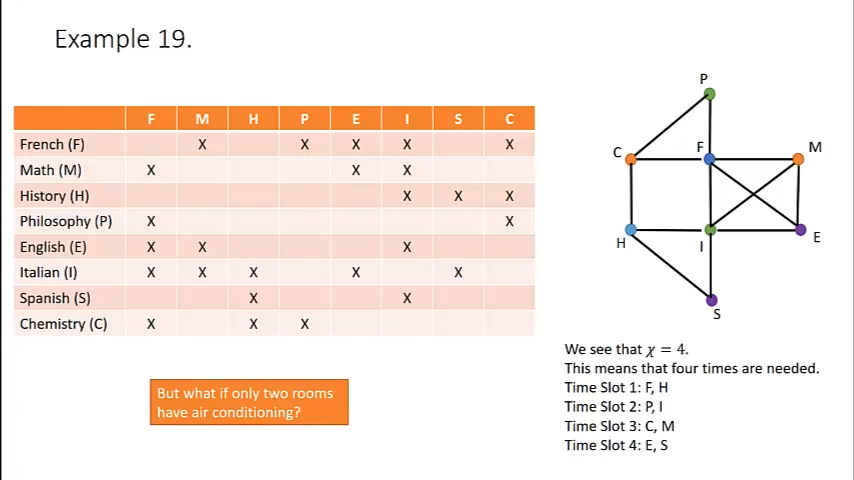
Seorang hobiis memiliki 6 jenis ikan hias: Alphas (A), Betas (B), Certas (C), Deltas (D), Epsas (E), dan Fetas (F). Karena alasan kecocokan air dan predator, beberapa ikan tidak boleh dicampur dalam satu akuarium. Berikut adalah tabel ketidakcocokan ikan:
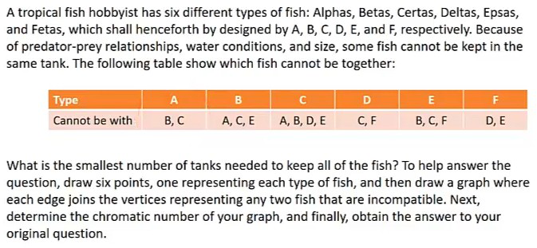
Soal: Berapakah jumlah akuarium minimum yang dibutuhkan untuk menampung seluruh ikan tersebut?
Buatlah graf dengan ikan sebagai vertex dan ketidakcocokan sebagai edge. Lalu carilah bilangan kromatiknya dengan mewarnai graf tersebut.
Didapatkan bilangan kromatik \(\chi = 3\), yang berarti kita membutuhkan minimal 3 Akuarium.
Pembagian Akuarium:
- Akuarium 1 (Biru): Ikan A, E
- Akuarium 2 (Hijau): Ikan B, D
- Akuarium 3 (Oranye): Ikan C, F
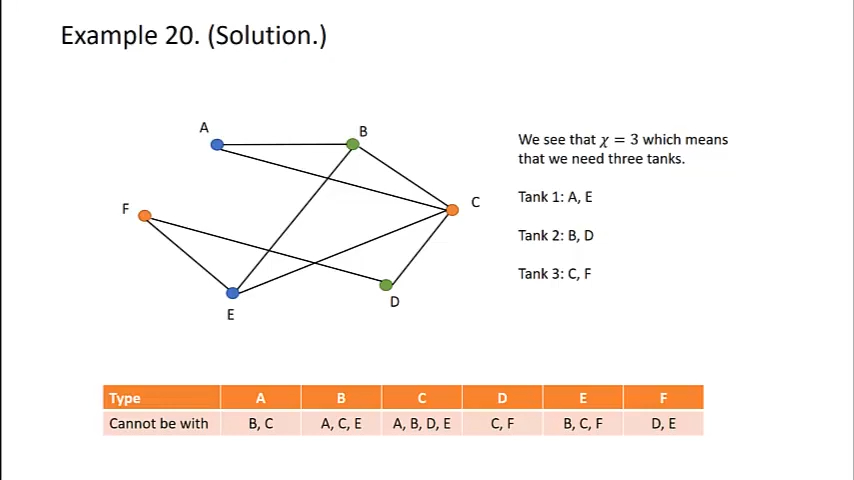
3. Finite State Automata (FSA)
Finite State Automata (FSA) atau sering juga disebut Finite State Machine adalah model matematika dari sistem yang memiliki input dan output berupa keputusan (diterima/ditolak) berdasarkan keadaan/status (state) yang terbatas.
DFA secara matematis didefinisikan sebagai 5-tuple $(Q, \Sigma, q_0, F, \delta)$ di mana:
- $Q$: Himpunan berhingga dari semua keadaan (states).
- $\Sigma$: Himpunan simbol input (alphabet).
- $q_0$: State awal (initial/start state), di mana $q_0 \in Q$.
- $F$: Himpunan state akhir (final/accept states), di mana $F \subseteq Q$ (digambarkan dengan lingkaran ganda).
- $\delta$: Fungsi transisi yang memetakan keadaan dan input ke keadaan berikutnya ($\delta: Q \times \Sigma \rightarrow Q$).
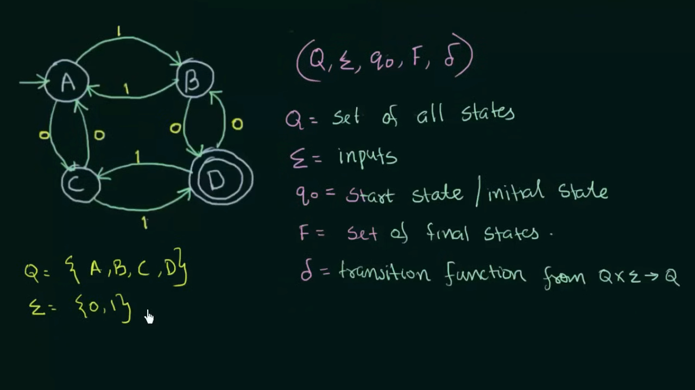
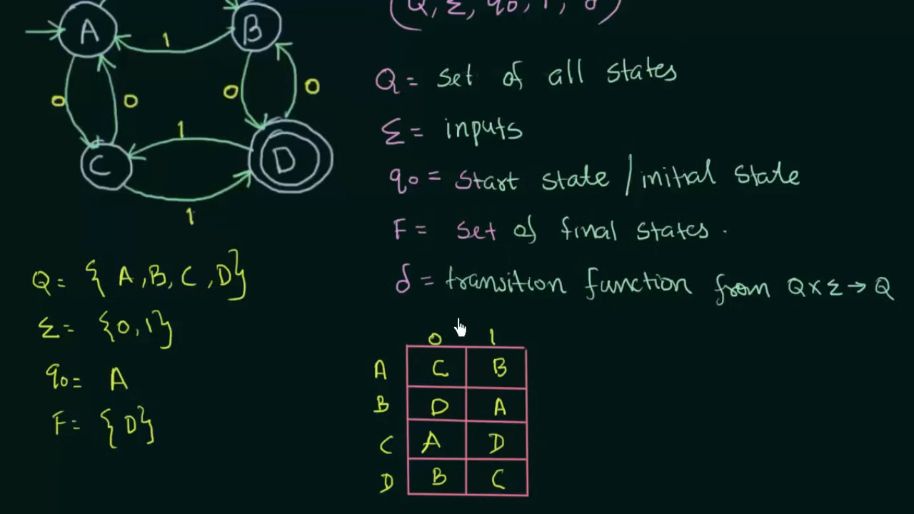
Rancanglah sebuah DFA yang menerima semua string biner yang diawali dengan angka 0.
Ujilah apakah string 001 diterima dan 101 ditolak oleh DFA tersebut!
Desain DFA:
- State A (Start). Jika input \(0\), masuk ke B (Final State). Jika input \(1\), masuk ke C (Dead/Trap State).
- State B (Final). Jika input \(0\) atau \(1\), tetap berada di B (self-loop).
- State C (Dead State). Jika input \(0\) atau \(1\), tetap berada di C (self-loop).
Pengujian String:
- String 001: \(A \dots \xrightarrow{0} B \xrightarrow{0} B \xrightarrow{1} B\) (Berakhir di B yang merupakan final state, maka DITERIMA).
- String 101: \(A \xrightarrow{1} C \xrightarrow{0} C \xrightarrow{1} C\) (Berakhir di C yang bukan final state, maka DITOLAK).
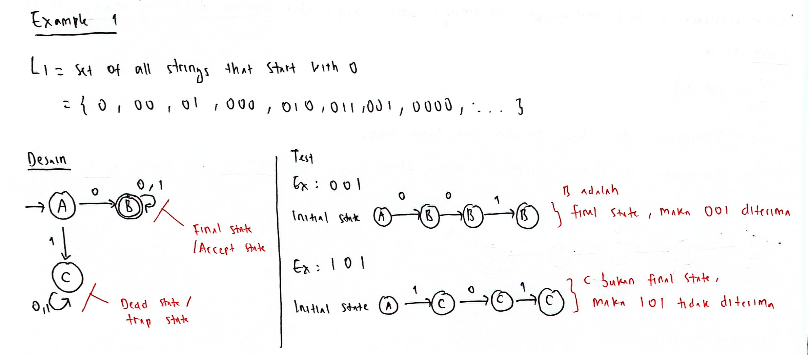
Rancanglah sebuah DFA yang menerima semua string biner dengan panjang tepat 2 (\(L = \{00, 01, 10, 11\}\)).
Ujilah input: 00, 10, 001, 1.
Desain DFA:
- \(A \xrightarrow{0,1} B \xrightarrow{0,1} C\) (C adalah Final State).
- Dari C, jika ada input tambahan \(0,1\), masuk ke D (Dead/Trap State) dengan self-loop \(0,1\).
Hasil Pengujian:
- \(00\): \(A \xrightarrow{0} B \xrightarrow{0} C\) (Berakhir di C $\rightarrow$ Diterima).
- \(10\): \(A \xrightarrow{1} B \xrightarrow{0} C\) (Berakhir di C $\rightarrow$ Diterima).
- \(001\): \(A \xrightarrow{0} B \xrightarrow{0} C \xrightarrow{1} D\) (Berakhir di D $\rightarrow$ Ditolak).
- \(1\): \(A \xrightarrow{1} B\) (Berakhir di B $\rightarrow$ Ditolak).
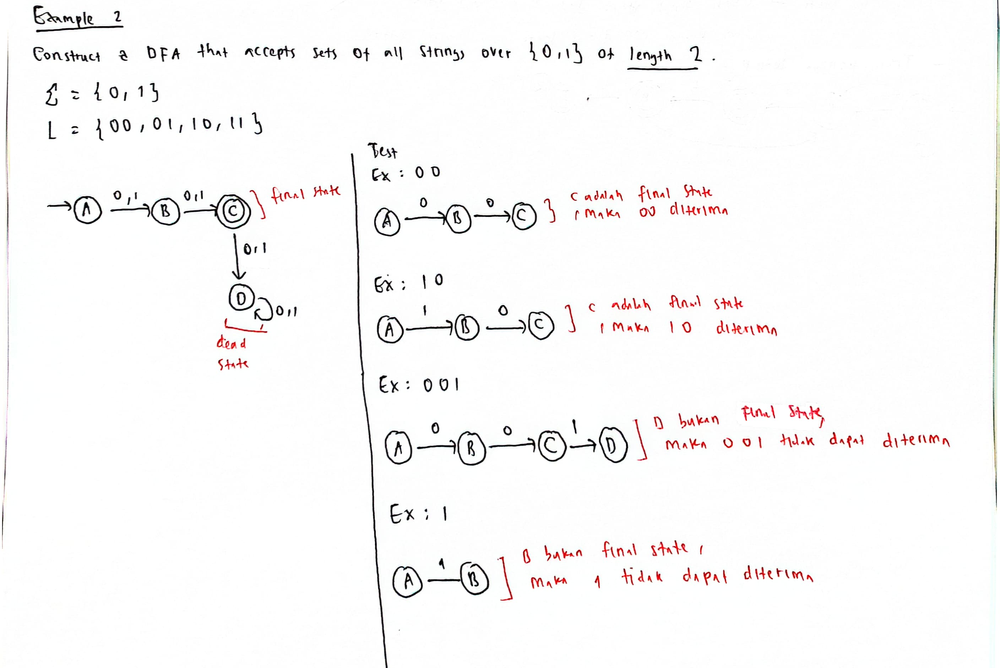
Rancanglah sebuah DFA yang menerima semua string dari himpunan \(\{a,b\}\) yang tidak mengandung substring aabb.
Metode Penyelesaian (State Flipping):
Lebih mudah jika kita mendesain DFA yang menerima string yang mengandung aabb terlebih dahulu, kemudian membalik status seluruh state (final state diubah menjadi non-final, dan sebaliknya).
Langkah 1: Membuat DFA yang menerima 'aabb'
- Jalur sukses: \(A \xrightarrow{a} B \xrightarrow{a} C \xrightarrow{b} D \xrightarrow{b} E\) (E adalah final state).
- Transisi penyeimbang:
- Di A: jika input \(b\) tetap di A.
- Di B: jika input \(b\) kembali ke A.
- Di C: jika input \(a\) tetap di C.
- Di D: jika input \(a\) kembali ke B.
- Di E: self-loop untuk input \(a,b\).
Langkah 2: Membalik Status State (Flip States)
Ubah state A, B, C, dan D menjadi Final States (lingkaran ganda), sedangkan E diubah menjadi Non-final State (lingkaran tunggal). Transisi antar-state tetap sama persis.
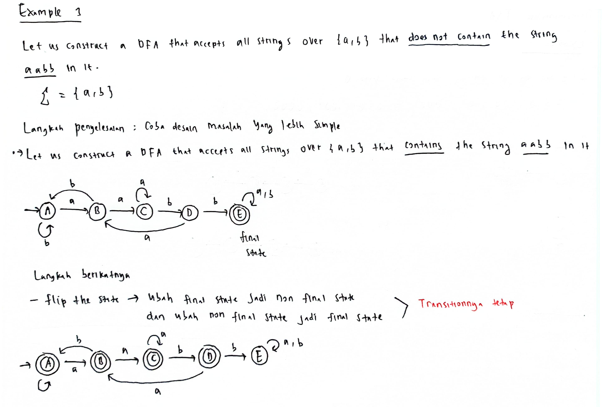
Perhatikan gambar DFA awal berikut:
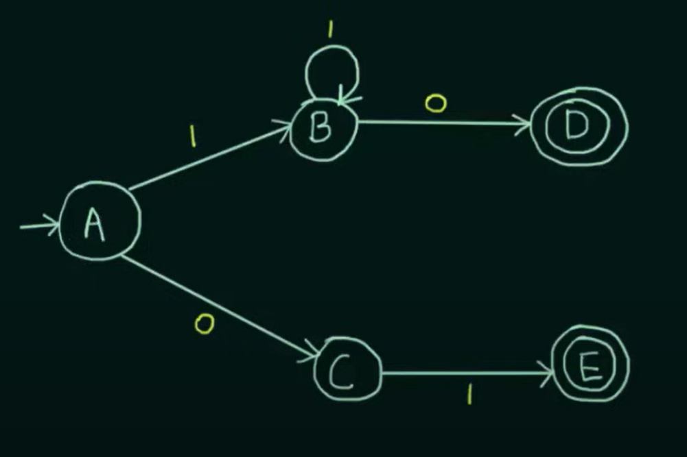
Soal:
a. Tentukan aturan bahasa dari DFA tersebut (DFA menerima string apa saja?).
b. Uji input berikut: 001, 010, 011, 1101, 1100. Lengkapilah DFA tersebut dengan menambahkan dead state agar memenuhi kaidah DFA lengkap.
a. Aturan Bahasa DFA:
DFA ini menerima bahasa:
\[L = \{\text{string } 01 \text{ ATAU string yang terdiri dari sekurang-kurangnya satu buah } '1' \text{ diikuti oleh satu buah } '0'\}\]
Contoh string yang diterima: \(01\), \(10\), \(110\), \(1110\), dsb.
b. Kelengkapan DFA dengan Dead State X:
DFA yang baik harus mendefinisikan transisi untuk setiap simbol input di setiap state. Kita menambahkan Dead State X untuk menampung transisi mati:
- Dari C jika mendapat input \(0\) pergi ke X.
- Dari D dan E jika mendapat input \(0\) atau \(1\) pergi ke X.
Tracing Uji Input pada DFA Lengkap:
- \(001\): \(A \xrightarrow{0} C \xrightarrow{0} X \xrightarrow{1} X\) $\rightarrow$ Ditolak.
- \(010\): \(A \xrightarrow{0} C \xrightarrow{1} E \xrightarrow{0} X\) $\rightarrow$ Ditolak.
- \(011\): \(A \xrightarrow{0} C \xrightarrow{1} E \xrightarrow{1} X\) $\rightarrow$ Ditolak.
- \(1101\): \(A \xrightarrow{1} B \xrightarrow{1} B \xrightarrow{0} D \xrightarrow{1} X\) $\rightarrow$ Ditolak.
- \(1100\): \(A \xrightarrow{1} B \xrightarrow{1} B \xrightarrow{0} D \xrightarrow{0} X\) $\rightarrow$ Ditolak.
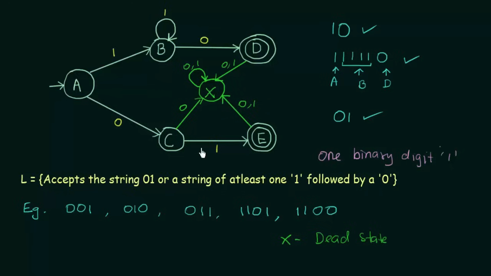
Rancanglah DFA untuk mengenali bahasa-bahasa biner berikut:
(a) Himpunan string yang diawali oleh dua buah 0 (\(00\)).
(b) Himpunan string yang mengandung substring dua buah 0 berurutan.
(c) Himpunan string yang TIDAK mengandung substring dua buah 0 berurutan.
(d) Himpunan string yang diakhiri oleh dua buah 0 (\(00\)).
(e) Himpunan string yang memiliki sekurang-kurangnya dua buah angka 0.
Berikut adalah rancangan diagram transisi DFA untuk kelima bahasa di atas:
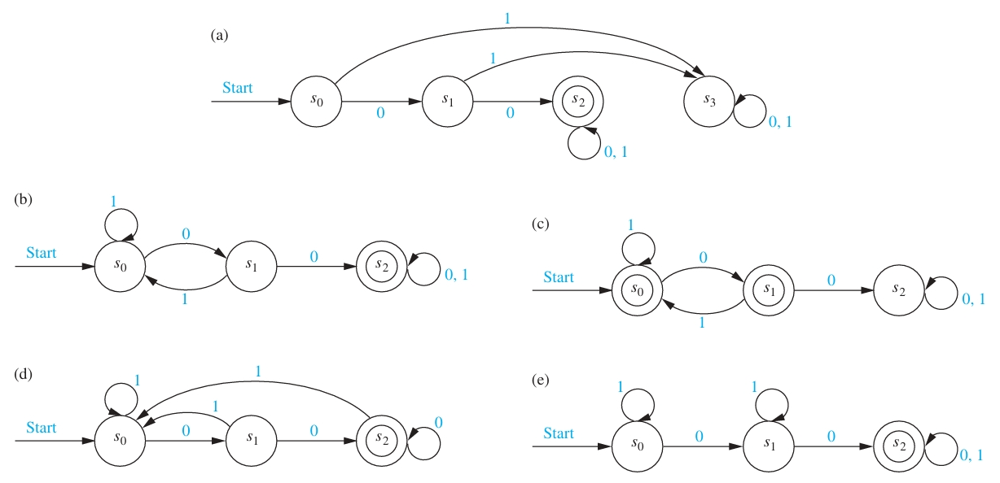
Ringkasan Analisis Diagram:
- (a): Jika input pertama/kedua adalah 1, langsung diarahkan ke dead state \(s_3\). Sukses jika melewati \(s_0 \xrightarrow{0} s_1 \xrightarrow{0} s_2\) (final state).
- (b): Setelah menemukan \(00\) di state \(s_2\), input apa pun setelahnya akan tetap berada di \(s_2\) (self-loop).
- (c): Flipped version dari (b). State \(s_0\) dan \(s_1\) adalah final state. Jika terjadi \(00\), sistem berpindah ke dead state \(s_2\).
- (d): State akhir \(s_2\) hanya dicapai setelah mendeteksi \(00\). Jika setelahnya ada input 1, sistem kembali ke \(s_0\). Jika ada input 0, tetap di \(s_2\).
- (e): Kita menghitung kemunculan angka 0. State \(s_1\) merepresentasikan penemuan satu angka 0, dan \(s_2\) merepresentasikan penemuan sekurang-kurangnya dua angka 0 (final state).
4. Graph Isomorphisms (Isomorfisma Graf)
Dua graf $G_1 = (V_1, E_1)$ dan $G_2 = (V_2, E_2)$ dikatakan isomorfik (isomorphic) jika terdapat korespondensi satu-ke-satu (fungsi bijektif) $f$ dari $V_1$ ke $V_2$ yang menjaga hubungan ketetanggaan. Artinya, jika vertex $u$ bertetangga dengan $v$ di graf $G_1$, maka $f(u)$ harus bertetangga dengan $f(v)$ di graf $G_2$.
Secara sederhana, dua graf yang isomorfik memiliki struktur matematis yang identik sama, meskipun nama vertex-nya berbeda dan digambarkan dengan bentuk visual yang sangat berlainan.
Syarat Perlu (Graph Invariant)
Sebelum membuktikan dua graf isomorfik, kita harus memeriksa beberapa syarat mutlak (jika salah satu tidak terpenuhi, maka graf dijamin tidak isomorfik):
- Jumlah vertex (titik) kedua graf sama (\(|V_1| = |V_2|\)).
- Jumlah edge (sisi) kedua graf sama (\(|E_1| = |E_2|\)).
- Derajat sequence (degree sequence) kedua graf sama (distribusi nilai derajat setiap vertex harus sama).
Contoh Isomorfisma Graf
Perhatikan dua graf berikut. Keduanya terlihat sangat berbeda secara visual, tetapi sebenarnya keduanya isomorfik (keduanya merepresentasikan graf siklus dengan 4 vertex, $C_4$):
graph TD
1(1) --- 2(2)
2 --- 3(3)
3 --- 4(4)
4 --- 1
graph TD
A(A) --- C(C)
A --- D(D)
B(B) --- C
B --- D
Bukti Isomorfik:
- Jumlah vertex sama-sama 4.
- Jumlah edge sama-sama 4.
- Semua vertex memiliki derajat 2.
- Fungsi pemetaan bijektif yang menjaga ketetanggaan:
\(f(1) = A\)
\(f(2) = C\)
\(f(3) = B\)
\(f(4) = D\)
Mari kita periksa sisinya:
- Sisi \(\{1,2\}\) di G1 dipetakan menjadi \(\{f(1), f(2)\} = \{A, C\}\) (ada di G2).
- Sisi \(\{2,3\}\) di G1 dipetakan menjadi \(\{f(2), f(3)\} = \{C, B\}\) (ada di G2).
- Sisi \(\{3,4\}\) di G1 dipetakan menjadi \(\{f(3), f(4)\} = \{B, D\}\) (ada di G2).
- Sisi \(\{4,1\}\) di G1 dipetakan menjadi \(\{f(4), f(1)\} = \{D, A\}\) (ada di G2).
Karena terdapat fungsi bijektif yang mempertahankan hubungan ketetanggaan ini, terbukti bahwa G1 isomorfik dengan G2.